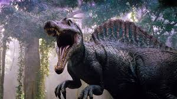
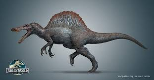
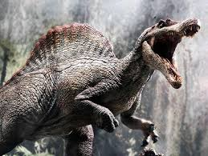

Spinosaurus je bio jedan od najvećih mesoždera koji su ikada postojali. Živeo je pre oko 100 miliona godina na prostoru današnje severne Afrike. Za razliku od većine velikih predatora, Spinosaurus je bio poluvodeni dinosaur, što znači da je dobar deo života provodio u vodi. Njegovo telo je bilo prilagođeno za plivanje – imao je dugu, usku njušku punu zuba, sličnu onoj kod krokodila, i verovatno je lovio ribu i druge vodene životinje. Posebno je poznat po velikoj koštanoj strukturi na leđima – "jedru" koje je verovatno koristio za regulaciju telesne temperature ili prikazivanje. Danas ga smatramo jednim od najdužih poznatih predatora – dužine i do 15 metara – čak većim i od Tiranosaurusa reksa!
  